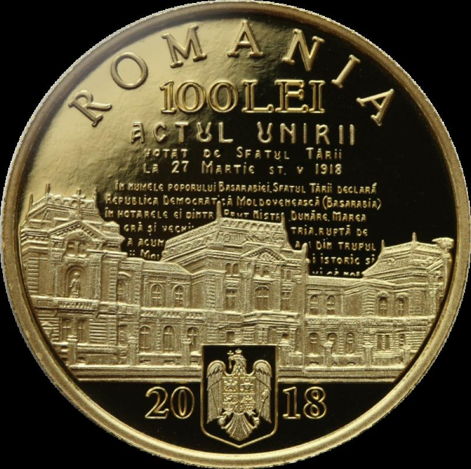
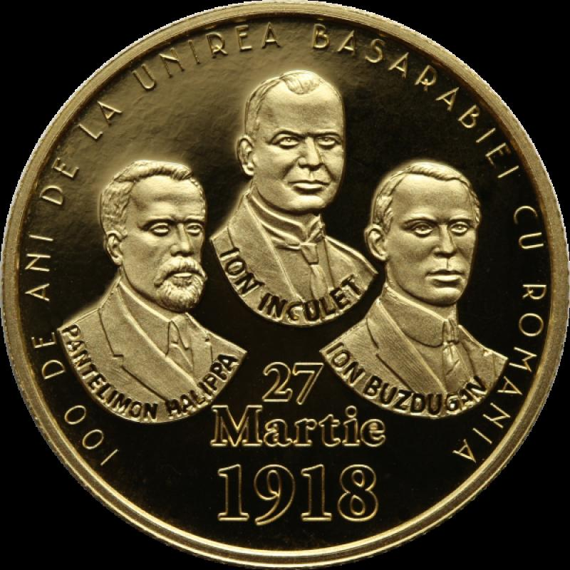
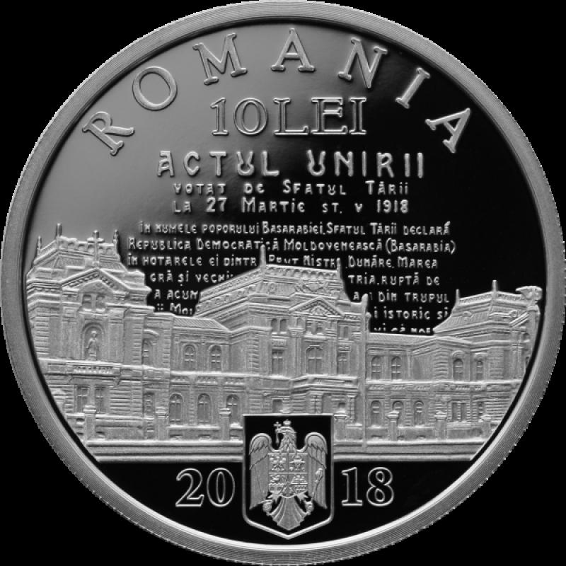
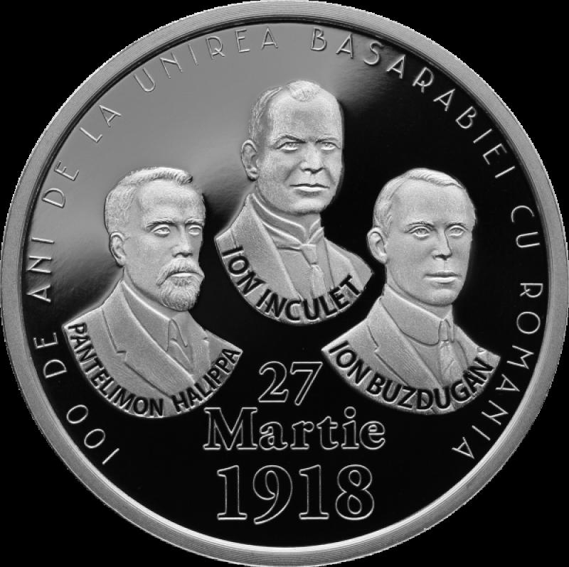
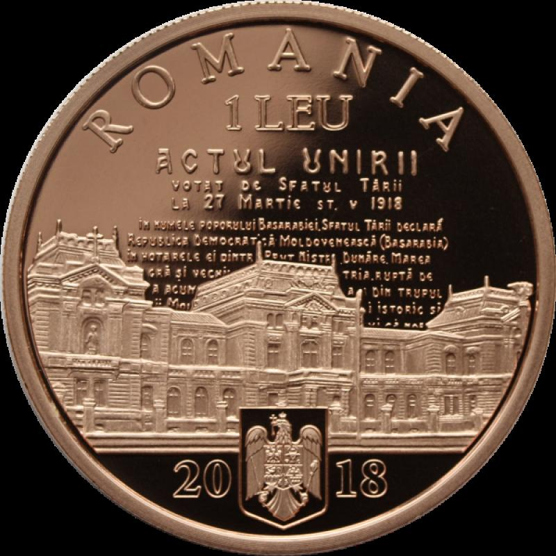
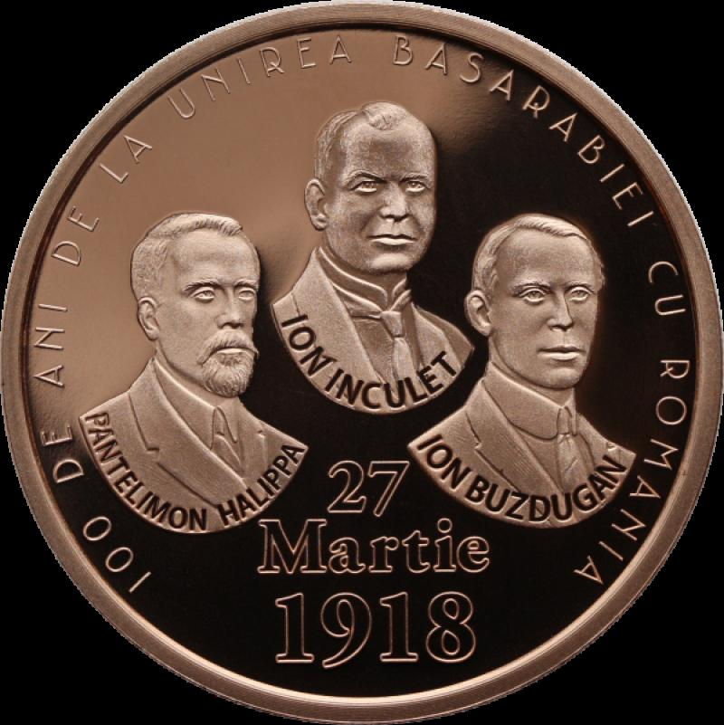
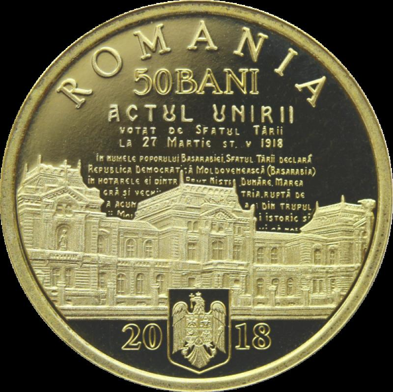
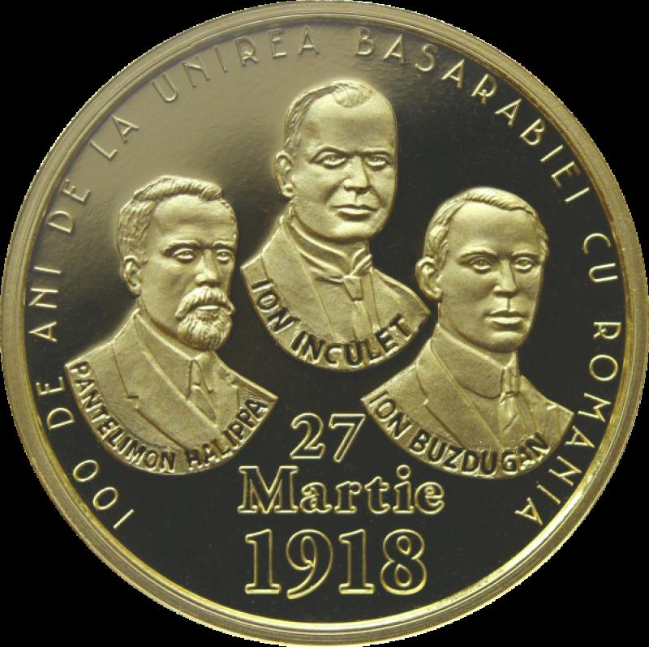

4 Monede
Banca Naţională a României
a lansat în circuitul numismatic patru modele noi de monede,
dedicate împlinirii a 100 de ani de la Marea Unire.
Monedele sunt confecționate din aur, argint, tombac
cuprat și alamă.


Aversul medaliei de aur are în prim-plan,
o imagine a clădirii Sfatului Țării din Chișinău, unde
s-a votat unirea Basarabiei cu România;

Moneda din aur are o valoare nominala de 100 de lei și o greutate de 6,452 grame.
Cu un diametru de 21 mm, are marginea zimțată.

Moneda din argint va avea o valoare nominală de 10 lei, 31,103 grame,
un diametru de 37 mm și un tiraj de 200 de exemplare.

Pe revers găsim portretele și numele celor trei semnatari ai Actului Unirii Basarabiei
cu România: Ion Inculeț, președinte al Sfatului Țării,
Pantelimon Halippa, vicepreședinte și Ion Buzdugan,

Cea de-a treia moneda,
din tombac-cuprat are o valoare nominala de 1 leu, 23,5 grame, un diametru
de 37 de mm, marginea zimțată. 200 de exemplare este tirajul și în acest caz.

Pe revers găsim portretele și numele celor trei semnatari ai Actului Unirii Basarabiei
cu România: Ion Inculeț, președinte al Sfatului Țării,
Pantelimon Halippa, vicepreședinte și Ion Buzdugan,

Ultima monedă, din metal comun, va avea o valoare nominală de 50 de bani.

Cu o greutate de 6,1 grame și un diametru de 23,75 mm, are marginea inscripționată.
Tirajul este de 5000 de exemplare.